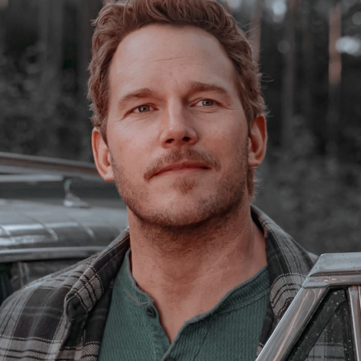

Profile
Name: Owen Grady
Age: 40 (as of *Jurassic World*)
Occupation: Raptor Trainer
Specialty: Dinosaur Behavior
Character Background
Owen Grady is a former Navy veteran and an expert on dinosaur behavior. He works as a raptor trainer at Jurassic World, where he establishes a unique connection with the park’s most dangerous predators. His skills in training and understanding the raptors prove crucial in the park's survival during its crises.
Key Appearances
- Jurassic World (2015)
- Jurassic World: Fallen Kingdom (2018)
- Jurassic World: Dominion (2022)
Famous Quote
"These animals are thinking, ‘I gotta eat,’ but they’re not planning a murder." – Owen Grady, Jurassic World (2015)